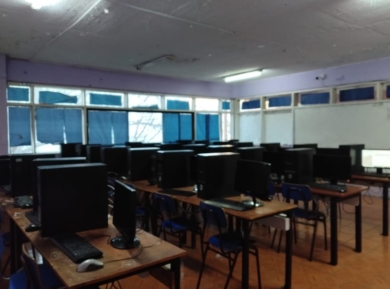

Sistema operativo
Los computadores del laboratorio cuentan con Linux 1000 y Windows 10 como sistemas operativos.
LABORATORIO 05
El Laboratorio 5 es uno de los espacios informáticos disponibles en el liceo. Sus computadores cuentan con Linux 1000 y Windows 10 como sistemas operativos.
Debido a las características y rendimiento de sus equipos, este laboratorio es utilizado principalmente por cursos que no tienen asignaturas relacionadas directamente con programación.

INFORMACIÓN DEL ESPACIO
Los computadores del laboratorio cuentan con Linux 1000 y Windows 10 como sistemas operativos.
Los equipos cuentan con 4 GB de memoria RAM, característica que influye en el rendimiento general de los computadores.
Es uno de los laboratorios con menor rendimiento del liceo, junto con el Laboratorio 3.
Debido a su rendimiento, es utilizado principalmente por cursos que no tienen asignaturas de programación.
Se encuentra ubicado en el tercer piso del liceo, en el ala derecha.
Los equipos están destinados principalmente a actividades académicas que no requieren programación.
PERSONAL RESPONSABLE
PROFESOR A CARGO
Profesor encargado de los laboratorios del área y de actividades relacionadas con el uso académico de estos espacios.
TÉCNICO Y MANTENCIÓN
Técnico encargado de la mantención y funcionamiento de los equipos y recursos tecnológicos de los laboratorios.
HORARIO DE USO
A continuación se presenta la información disponible sobre las actividades programadas para este laboratorio.
| Horario | Actividad | Profesor | Curso |
|---|---|---|---|
| Horario no disponible | Información pendiente | — | — |
| Horario | Actividad | Profesor | Curso |
|---|---|---|---|
| Horario no disponible | Información pendiente | — | — |
| Horario | Actividad | Profesor | Curso |
|---|---|---|---|
| Horario no disponible | Información pendiente | — | — |
| Horario | Actividad | Profesor | Curso |
|---|---|---|---|
| Horario no disponible | Información pendiente | — | — |
| Horario | Actividad | Profesor | Curso |
|---|---|---|---|
| Horario no disponible | Información pendiente | — | — |
El horario detallado del Laboratorio 5 aún no se encuentra disponible en esta página. Las actividades y horarios pueden estar sujetos a modificaciones según la planificación del establecimiento.